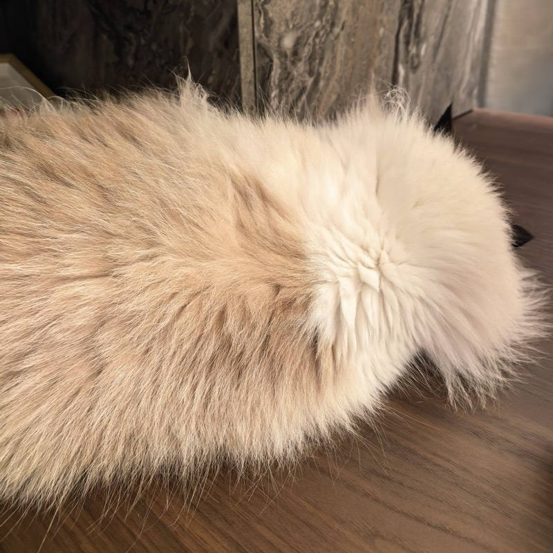

Yuheng Chen 陈宇恒
I am a PhD student in Data Science in the Department of Mathematics at The Hong Kong University of Science and Technology, advised by Prof. Can Yang. I received my BSc in Statistics from Sun Yat-sen University in 2023.
My research is on statistical and machine-learning methods for spatial transcriptomics: recovering single cells from high-resolution spatial data, correcting molecules assigned to the wrong cell, and building agents that run spatial analyses from natural-language requests.

Research
I am interested in spatial transcriptomics and spatial omics, cell segmentation and cell-type annotation, probabilistic modeling and optimal transport, and LLM agents for scientific data analysis. Representative papers are highlighted.
Publications
-
CellART: a unified framework for extracting single-cell information from high-resolution spatial transcriptomics
Yuheng Chen, Yuyao Liu, Zhiwei Wang, Yeqin Zeng, Zitong Chao, Peiqi Jiang, Hao Chen, Jiguang Wang, Jiashun Xiao, Can YangNature Computational Science, 2026
Combines stained tissue images, spatial transcriptomics and single-cell references to segment cells and annotate cell types jointly. Validated on Xenium, Visium HD, MERFISH and Stereo-seq.
-
STAT: A multi-agent framework for integrated and interactive spatial transcriptomics analysis
Yuheng Chen, Shi Han, Zitong Chao, Yuyao Liu, Fan Zhang, Hao Chen, Jiguang Wang, Jiashun Xiao, Can YangNature Methods, under review · bioRxiv, 2026
A multi-agent system that plans, runs and explains spatial transcriptomics analyses from natural-language requests, alongside a shared tissue viewer. Benchmarked on 3 platforms and 11 categories of analysis tasks.
-
Accurate and scalable decontamination of imaging-based spatial transcriptomics via optimal transport
Yuheng Chen, Yuyao Liu, Zitong Chao, Shi Han, Yeqin Zeng, Baichen Yu, Fan Zhang, Angela Ruohao Wu, Jiguang Wang, Hao Chen, Jiashun Xiao, Can YangNature Computational Science, under review · bioRxiv, 2026 · co‑first author
CellDot uses optimal transport to decide whether each molecule should be kept, reassigned to another cell or removed as background, correcting errors from segmentation and transcript spillover.
-
Mapping cell-type-specific spatial gene programs uncovers tissue architecture and microenvironment organization
Yeqin Zeng, Zhiwei Wang, Yuyao Liu, Yuheng Chen, Jiguang Wang, Hao Chen, Can YangNature Communications, 2026
-
Hierarchical distribution matching enables comprehensive characterization of common and condition-specific cell niches in spatial omics data
Yuyao Liu, Jiashun Xiao, Xiaoheng Ma, Xiaomeng Wan, Peiqi Jiang, Zhiwei Wang, Yuheng Chen, Can YangbioRxiv, 2026
-
OceanMind: A multi-agent AI system for ocean diagnosis
Fan Zhang, Weicong Cheng, Yuheng Chen, Hiuseut Kung, Ying Zhang, Aixi Han, Quanjia Zhong, Can Yang, Jianping GanarXiv:2610.03780, 2026
-
Generative atlasing in universal gene expression space defines cell types and microenvironment spectra during disease progression
Xiaomeng Wan, Lei Yu, Yuheng Chen, Jiashun Xiao, Mu He, Can Yang, Angela Ruohao WuResearch Square, 2026
-
A unified framework for identification of cell-type-specific spatially variable genes in spatial transcriptomic studies
Zhiwei Wang, Yeqin Zeng, Ziyue Tan, Yuheng Chen, Xinrui Huang, Hongyu Zhao, Zhixiang Lin, Can YangPNAS, 122(46), e2503952122, 2025
-
UCS: A Unified Approach to Cell Segmentation for Subcellular Spatial Transcriptomics
Yuheng Chen, Xin Xu, Xiaomeng Wan, Jiashun Xiao, Can YangSmall Methods, 9(5), 2400975, 2025
-
NicheScope: Identifying Multicellular Niches and Niche-Regulated Cell States in Spatial Transcriptomics
Xinyi Yu, Xiaomeng Wan, Leqi Tian, Yuheng Chen, Yuyao Liu, Tianwei Yu, Can Yang, Jiashun XiaobioRxiv, 2025
Education
- 2023 – present
- PhD in Data Science, Department of Mathematics, HKUST
Advisor: Prof. Can Yang - 2019 – 2023
- BSc in Statistics, Sun Yat-sen University